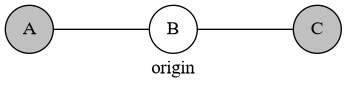
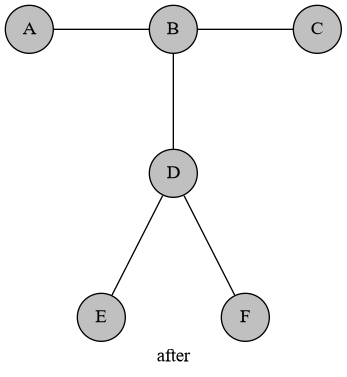
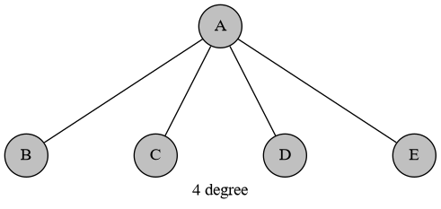
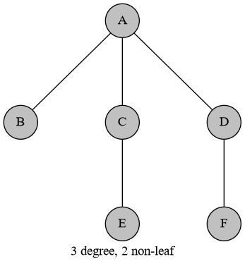
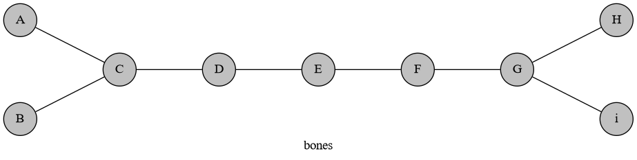
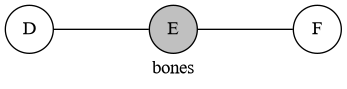
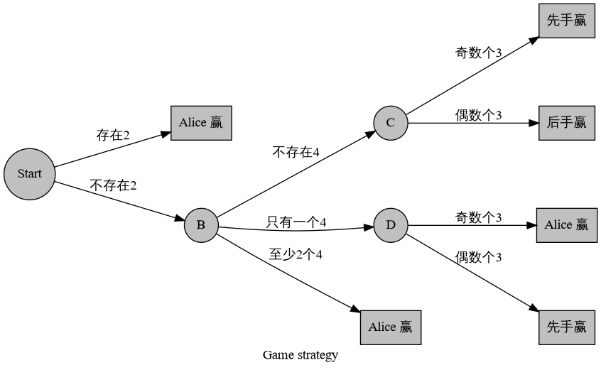
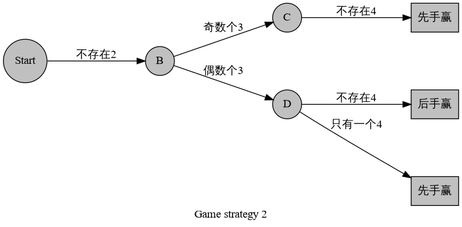

博弈论习题集
文章目录
历时 4 天补完这部分内容。
AGC002 E Candy Piles
打表，发现对角线上的 DP 值是一样的。
PE306 Paper-strip Game
打表，有循环节。
SPOJ COT3 - Combat on a tree
暴力求 SG 是的。把贡献累计一下可以优化到。
我们考虑维护子树的策略集，然后向上合并。合并的时候需要做集合异或，合并，线段树（01TRIE）合并即可。复杂度。
题解详见 Sshwy’s Blog 博奕论。
CF388 C Fox and Card Game
我们考虑先手的上界。如果后手模仿先手的行为，那么先手可以把每一堆前一半拿走，后手可以把后一半拿走。如果是奇数个数的堆那么中间会剩下一个，这个由谁拿走，我们不好说。但是下界是可以确定的，就是每一堆拿一半。
另一方面，如果先手可以通过某种方式拿到比一半还多的分，那么后手显然会模仿先手的行为来制止这种情况发生。
因此，每个人都会各拿一半。至于个数为奇数的堆，在拿完这一堆后，主动权会转移。因此先手显然会贪心地拿奇数堆中中间数最大的那个，然后后手拿第二大的，然后先手拿第三大的……
于是，我们每一堆各拿一半，把奇数中间的数拿出来排序，然后轮流分给先后手即可。
CF494 E Sharti
根据翻硬币的套路，我们只需要求每个格子单独为白色时的 SG 值的异或和即可。那么打表可以发现：
于是，我们可以每次把除以 2，矩形的边界也除以 2 并向“内”取整。然后做次矩形面积并即可，根据需要来更新答案。
时间复杂度。
CF794 E Choosing Carrot
首先可以区间 DP，设表示区间，先手最大化，后手最小化，最终的值；表示先手最小化，后手最大化，最终的值：
打个表，发现对角线上的数相等，这样是可以做的。
更严谨地，我们证明当是偶数时整个序列的答案是。那么先手只需要根据需要选择一个拿走，然后模仿后手的行为即可。
当是奇数的时候，我们相当于做一次 DP 转移，把的结果转移过来。
这样就证明了对角线相同的结论是对的。然后查询区间 max 即可。
时间复杂度。
AGC010 F Tree Game
我们把先手选择的第一个点做为根，那么我们可以证明对于结点：
- 如果存在它的儿子结点满足且是必败态，那么就是必胜态。证明很简单，如果后手想移到，你把它扔回即可。
- 其他情况，是必败态。并且当是叶子时也是必败态。我们可以理解为是先手把后手逼下来的，那么往上走是不优的。如果往下走到，有两种情况：是必胜态，或者。两种情况都是先手必败，因此得证。
时间复杂度。
CF1110 G Tree-Tac-Toe
首先考虑，把一个预先放有白点的结点变成一个人字结构：

变成

这样与原图是等价的。
考虑先手在 B 放一个白子，那么后手一定会在 D 放。留下的 E 和 F 不会改变先后手的顺序，因此等价。并且先手肯定在一开始就会在 B 放白子。因为不放白不放啊。不然被后手抢了 B，显然对先手不优。于是我们就证明了它与原图是等价的。
现在就变成了初始时没有白点的树结构。首先，如果存在一个 4 度以上的点，那么先手必胜：

另外，如果存在一个 3 度点，它的至少两个邻居都是非叶子结点，那么也先手必胜：

排除上述两种情况，可以发现这个图不可能有超过 2 个 3 度点。在这种情况下考虑一个骨头图：

这个骨头图可以理解为

这种状态显然是先手必胜。推广得到，如果骨头图中间的链长度为奇数，那么先手必胜。否则就是和局。
如果整个图只有一个 3 度点或者没有 3 度点，那么显然也是和局。
ZR967 银
我们把整个游戏左右翻转，最左边是黑子的条件就变成了最右边是黑子。根据翻硬币的套路，我们只需要求每个棋子单独是黑色时的 SG 值就是答案。
打表发现，。
那么我们再构造一个函数，表示把的每一位变成它的高位异或和。即。相当于把当成一个长度为 30 的数组，然后做后缀异或和。
不加证明地，有，且可逆（即构建了一个双射）。并且
那么有了这些结论，再来看题目。设当前局面的 SG 值是。相当于我们需要找到一个区间，满足位置上的是黑子，且
这个条件等价于
稍作化简就变成了
即对于一个固定的和，是唯一的（也可能不存在，因为我们要求）。思考发现，当且仅当的最高位在的二进制下也为 1 的时候，才存在合法的。
因此我们的问题变成了：
- 插入一个数
- 删除一个数
- 询问第位为 1 的数的个数
数组维护即可。可以在插入删除的时候顺便维护。
时间复杂度。
CF1033G
取模为什么是对的？首先，新游戏 G’的获胜策略在老游戏下也成立（加一个模仿）。而如果老游戏的获胜策略在新游戏失败，那么在老游戏中后手也可以让它失败。因此新老游戏等价。
我们强制，那么对于一堆：
- ：垃圾
- ：Alice 胜利
- ：一次性用品。
- ：Alice 先手的大胜利；Bob 的一次性用品。

考虑只统计先后手获胜的方案数，因为 Alice 获胜与 Bob 获胜是对偶的。我们把上述决策树稍加整理，化简得到

我们要求不存在 2，设。那么或者。得到
我们要记录 3 的个数，即：
存在 4：
考虑把从小到大排序。那么每次我们只需要统计时的获胜情况。
首先不存在 2。因此且。这两个条件把所有是 2 的情况都 ban 掉了。
在满足上述两个条件后，容易发现都是垃圾，不用考虑。
由于 4 最多出现 1 次，观察 4 的判定条件，发现的条件已经满足了。因此满足的最多只有一个——由于最大，因此只有有选择权。
这样，相当于都满足。结合 3 的判定条件，发现它们都是 3。这样就可以根据的奇偶性判断当前是先手胜还是后手胜，然后进行统计。
对于是否选择 4，分情况讨论即可。在实现的时候也可不必，因为 3,4 的个数和都是奇数，可以直接统计到先手获胜的情况上。
修订记录
- 2019年12月6日 创建文章